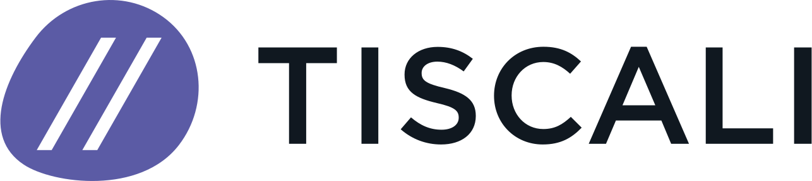

Professional Experience

May 2021 – Present
Cloud Solution Architect
Microsoft Italia Srl. — Milan
- Lead and support high-profile data and AI projects, ensuring smooth delivery and resolving complex technical challenges.
- Architect and deploy machine-learning solutions on Azure, improving CI/CD, scalability, and operational efficiency.
- Provide expertise in Microsoft Fabric, Azure Data Factory, and Azure Databricks, optimizing data structures and improving performance.
- Facilitate technical discussions, align stakeholders, and ensure project clarity and progress.
- Conduct upskilling and training on Azure Machine Learning, Databricks, Azure OpenAI, and Fabric.
Mar 2019 – Apr 2021
Big Data Engineer
ENI S.p.A. — Milan
- Developed a PySpark framework enabling automated deployment of ML models for Eni's Data Science team.
- Migrated forecasting and optimization processes for Eni Bolgiano's cogeneration plant to Azure, improving reliability and performance.
Dec 2016 – Feb 2019
Software & Data Engineer
Doodle AG — Zurich
- Built data pipelines with Airflow, Hadoop, and Redshift to power doodle.com's data warehouse and KPI reporting.
- Contributed to the migration to a Kubernetes-based AWS cloud infrastructure.
- Designed and deployed a real-time spam detection system (Kafka + scikit-learn) blocking ~10,000 spam events/day.
- Led technical hiring for backend engineers, shaping the future backend team.

Nov 2012 – Nov 2016
Senior Software Developer
Tiscali S.p.A. — Pisa
- Built real-time clustering algorithms for istella.it's news aggregator.
- Developed the search platform for Treccani.it, improving search quality and user experience.
- Created a custom search engine for video.mediaset.it, boosting content discovery.
- Built a real-time social media analytics dashboard used by Mediaset for live TV insights.

Oct 2011 – Oct 2012
Graduate Researcher
University of Pisa — Pisa
- Optimized TAGME (Java-based entity linking system), enabling 1M+ annual academic queries on commodity hardware with zero downtime.
- Designed clustering and classification algorithms for short text.
- Teaching assistant for algorithms and programming.